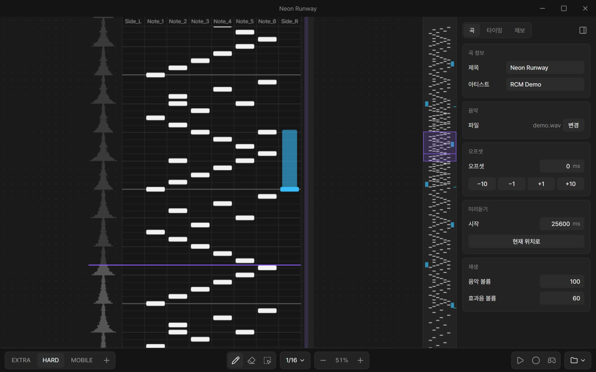
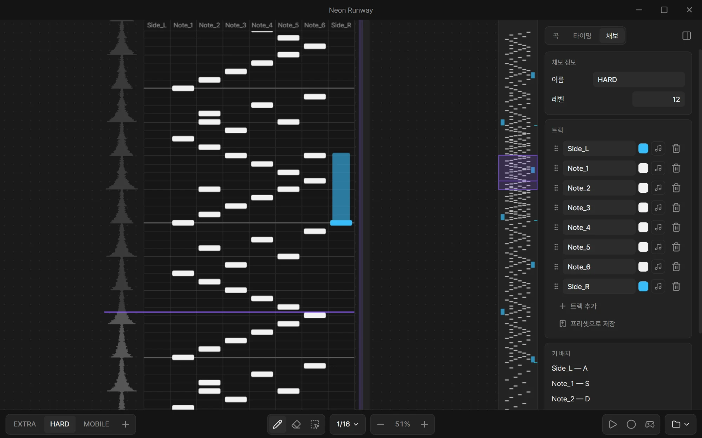
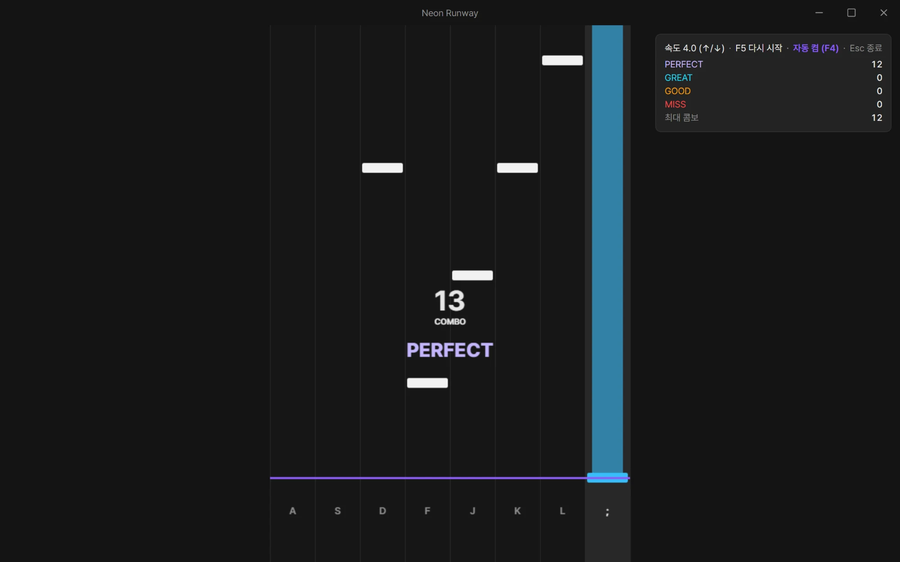
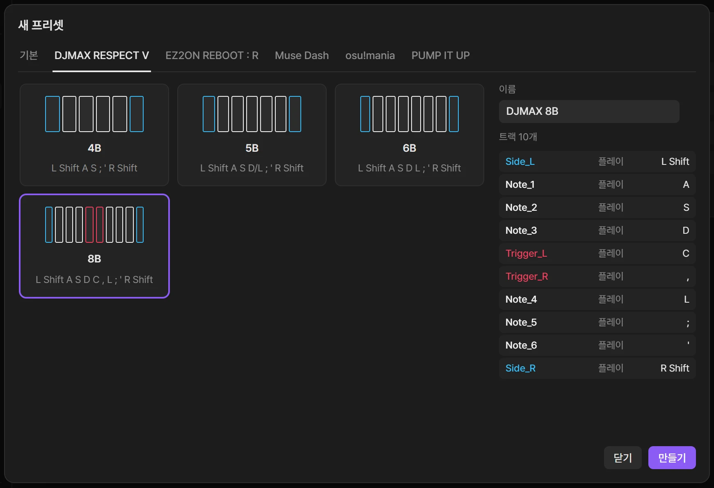
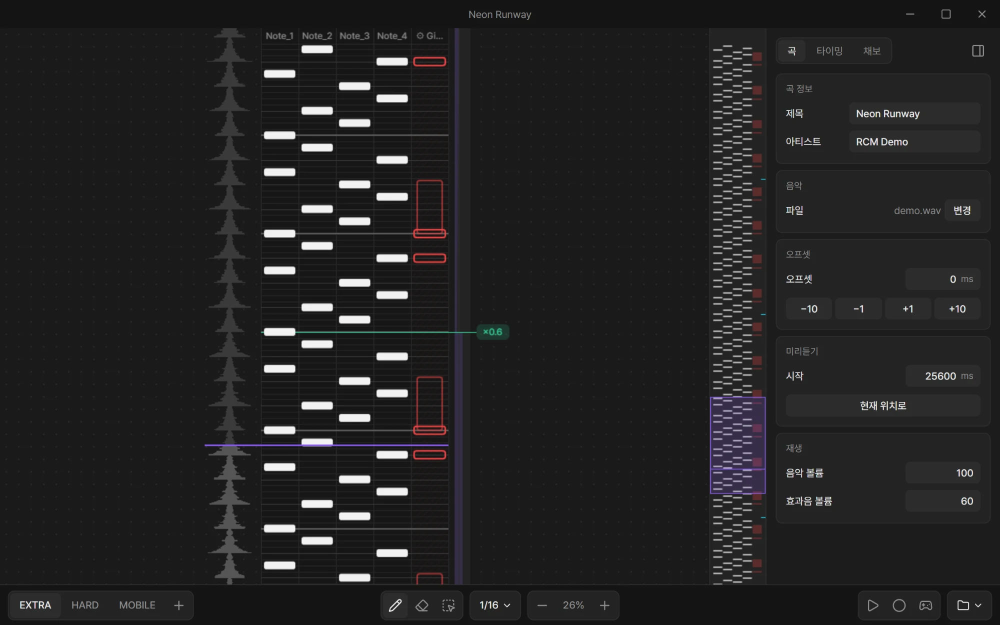
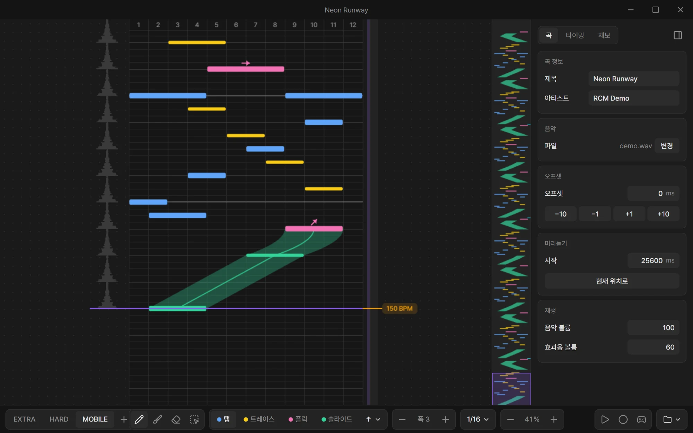
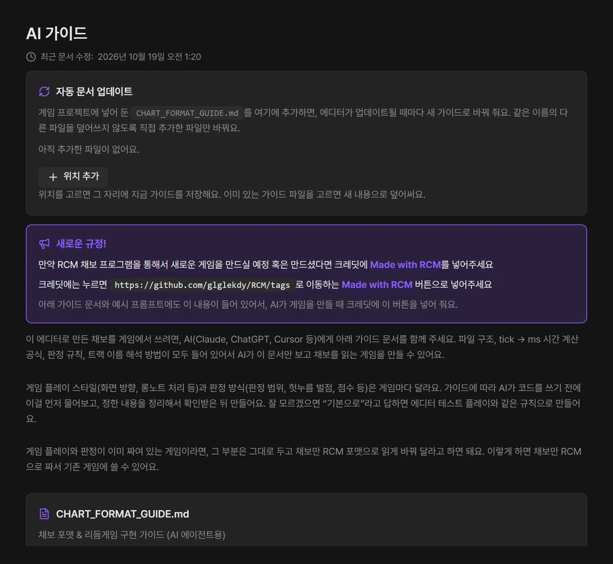

자동 업데이트
실행할 때 새 버전을 확인해서 받아 둡니다. 업데이트한 뒤 처음 열면 무엇이 바뀌었는지 보여 줍니다.
RCM은 세로 레인형 리듬게임의 채보를 만드는 무료 Windows 에디터입니다. 곡에 맞춰 노트를 찍고, 그 자리에서 플레이해 보고, 게임이 읽을 수 있는 JSON으로 저장합니다.

파형을 보며 박자에 맞춰 노트를 찍으세요. 롱노트는 끝을 끌어서 늘리고, 잘못 찍은 노트는 그대로 끌어서 옮깁니다.
Note_1, Side_L처럼 트랙 이름과 색을 자유롭게
F5를 누르면 지금 보고 있는 위치부터 테스트 플레이가 시작됩니다. 손으로 쳐 보며 판정을 확인하고, Esc로 나와서 바로 고치세요.

새 프리셋을 만들 때 게임 템플릿을 고르면 트랙 배치, 노트 색, 기본 키가 그 게임처럼 채워집니다.
한 트랙에 보조 키를 하나 더 지정할 수 있어서, 한 레인을 두 키로 칠 수도 있습니다.

곡 중간에 스크롤 속도를 바꿔 노트가 빨라지거나 느려지는 구간을 만드세요. 속도는 그 자리에서 바로 바꾸거나 서서히 바꿀 수 있습니다.
기믹 트랙은 판정 없이 데이터만 담는 트랙입니다. 장애물이 나오는 시점처럼 게임이 따로 해석할 연출을 채보 안에 함께 적어 둘 수 있습니다.

레인 대신 가로 위치와 폭으로 노트를 놓는 채보도 만들 수 있습니다. 화면 어디에나 노트가 나오는 모바일 리듬게임에 맞춘 형식입니다.

RCM 채보는 공개된 JSON 형식입니다. 에디터의 AI 가이드 탭에 있는 CHART_FORMAT_GUIDE.md를 Claude, ChatGPT, Cursor 같은 AI에게 주면, 채보를 읽는 게임을 만들 수 있습니다.
가이드에는 tick을 시간으로 바꾸는 공식, 판정 규칙, 트랙 이름을 해석하는 방법이 모두 들어 있습니다.
Made with RCM 표기를 부탁드립니다
RCM으로 만든 채보를 쓰는 게임을 공개한다면, 크레딧에 github.com/glglekdy/RCM/tags로 이동하는 Made with RCM 버튼을 넣어 주세요.

실행할 때 새 버전을 확인해서 받아 둡니다. 업데이트한 뒤 처음 열면 무엇이 바뀌었는지 보여 줍니다.
지금 편집 중인 곡이 Discord 프로필에 표시됩니다. 원하지 않으면 설정에서 끌 수 있습니다.
받은 프로젝트 ZIP을 홈 화면에 끌어다 놓으면 풀어서 목록에 바로 추가합니다.
위의 다운로드 버튼으로 RCM-Setup 설치 파일을 받습니다.
파란 "Windows의 PC 보호" 창이 뜨면 추가 정보를 누르고 실행을 누르세요. RCM은 코드 서명을 하지 않은 무료 프로그램이라 처음 실행할 때 이 경고가 나올 수 있습니다.
한 번 설치하면 새 버전이 나올 때마다 앱이 알아서 받아 둡니다. 다시 받으러 올 필요가 없습니다.